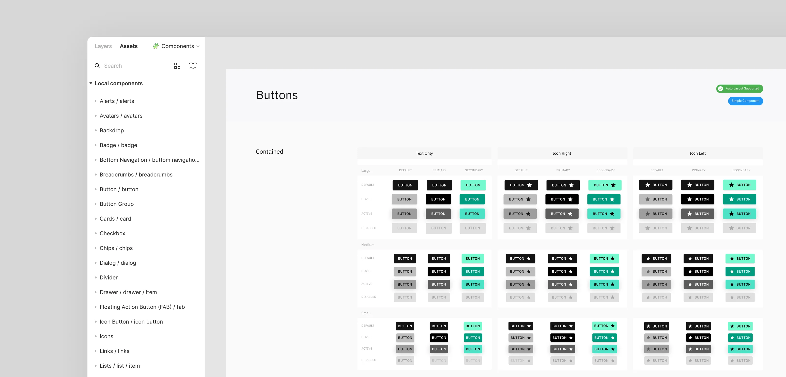
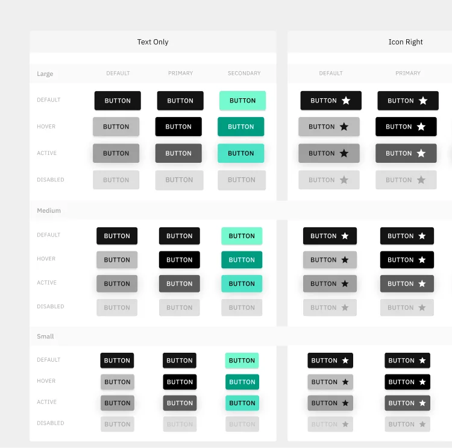
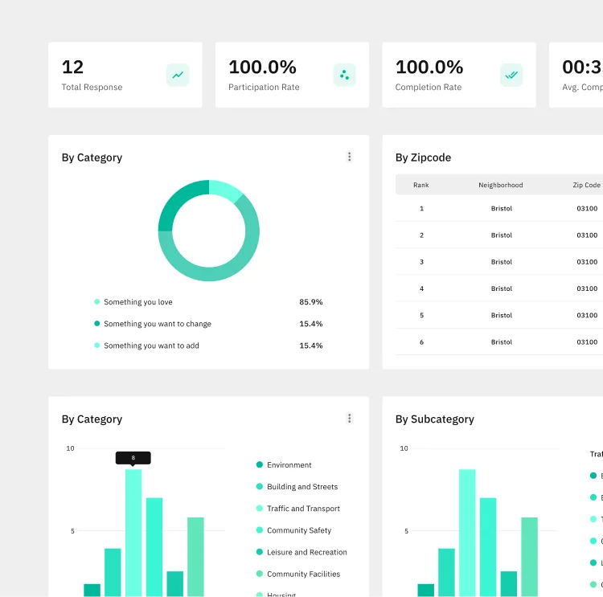
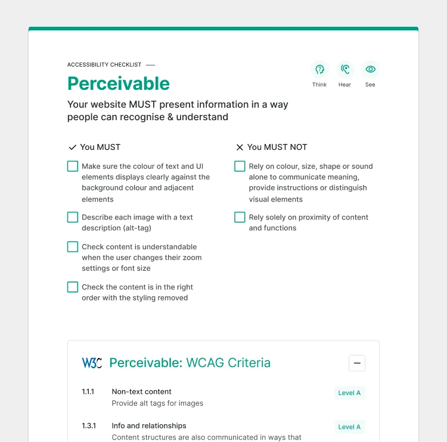

Consistency
- Unified design language
- Shared color tokens
- One typography ramp
- Aligned spacing scale
- Cross-product parity
- Single source of truth
- Reduced visual drift
- Predictable interactions
2 → 1
Design Languages Unified
A cohesive, accessible foundation powering every Irys surface — from citizen mobile to government dashboard.

"Two products built in parallel can't speak two different design languages."
The Irys mobile app and the Irys Government Dashboard were being designed and developed at the same time, by different teams, with limited time and a large surface to cover. Without a shared system, each interface risked drifting — different spacing, inconsistent components, divergent accessibility patterns — leaving the brand fragmented and the team paying technical debt for years to come.
Every screen rebuilt patterns from scratch. Every fix was multiplied by two.
Buttons, forms, navigation, color tokens, typography — each surface re-invented the same primitives, slightly differently. Designers spent hours aligning spacing across files. Developers translated one-off mockups into bespoke CSS. Accessibility checks were repeated case by case. Without a shared library, scaling new features meant re-litigating the basics every time. The fix had to be structural: a single, opinionated system, built once and consumed by both products.
With limited development time, the system had to be opinionated, lean, and ready to ship. I built it on Tailwind CSS for speed and React for component reusability, then evolved it surface by surface as the mobile and dashboard products grew.
 Foundations
Foundations
Established the foundational layer first: color scales, typography ramp (Inter), spacing units, radii, and elevation. Wired these to Tailwind's config so every value had a single source of truth across products and engineering.

Component LibraryDesigned and built the core component set in React: buttons (primary, secondary, outline, disabled), form fields (input, checkbox, radio, dropdown), cards, badges, and overlays. Each component shipped with variants, states, and accessibility baked in.

PatternsComposed primitives into recurring patterns: sidebar navigation, tab and breadcrumb systems, empty states, and data-table layouts. Documented each pattern's rationale so designers and engineers could pull from them without re-deciding.

AccessibilityAudited every component against WCAG 2.1 AA: contrast ratios, keyboard navigation, ARIA labels, and visible focus states. Made accessibility a property of the system, not an afterthought of each feature — so teams inherit it for free.
The system was built around four principles: consistency across products, accessibility by default, efficiency for teams, and scalability for what comes next. Every token, component, and pattern serves at least one of them.
Once the system was in place, both products started speaking the same language. New screens shipped faster because designers and engineers stopped re-deciding the basics. Accessibility became a property of the toolkit rather than a checklist per feature. The system absorbed change instead of breaking under it.
Building this system reinforced that a design system is infrastructure, not decoration. Its real value isn't in the polished components — it's in the decisions that no longer need to be re-litigated, the accessibility that no longer needs to be re-checked, and the speed teams gain when the basics are solved once and shared. The lesson stuck: invest early in the foundation, and every product on top of it gets faster, more consistent, and more humane to use.
I'm open to selected collaborations and projects. Let's talk about what you're building, and how it can work better.
Get in Touch →